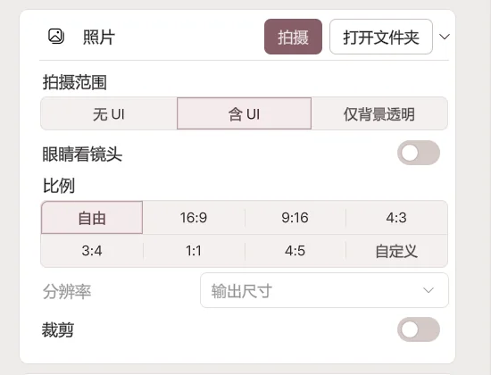

演播室
布置背景、灯光和道具，并保存要拍摄的相机和场景。屏幕的色彩和镜头效果将在效果中单独说明。
场景
角色布置
| 调节 | 变化的东西 |
|---|---|
| 位置 X | 向左右移动。 |
| 位置 Y | 上下移动。 |
| 位置 Z | 前后移动。 |
| 旋转 | 改变角色所看的方向。 |
| 大小 | 将场景中的角色放大或缩小。 |
| 亮度 | 调节应用于角色的亮度。 |
| 居中 | 将角色恢复到基准位置。 |
多个角色 (Pro)
通过添加角色，可以在同一场景中放置更多角色。选择角色后更改控制对象，接收我追踪输入的角色也会随之改变。
- 相同动作：多个角色会根据相同的追踪输入一起移动。
- 全部唇形同步：多个角色的嘴巴会一起动。
- 主要唇形同步：只有主要控制的角色嘴巴会动。
- 关闭唇形同步：不使用共享唇形同步。
姿势 (Pro)

- 在工作室 → 在摆姿势中开启摆姿势模式。
- 选择骨骼来拖动旋转环或移动手脚。
- 按完成以保存姿势。
- 在角色菜单的详细卡中应用。
| 操作·按钮 | 结果 |
|---|---|
| 骨骼选择·旋转 | 改变所选关节的方向。 |
| 手·脚 拖动 | 移动端点，使手或脚跟随。 |
| Alt+拖动 | 改变肘部和膝盖所指的方向。 |
| 对称编辑 | 另一边也会一起改变。 |
| 左右翻转 | 改变姿势的左右方向。 |
| 固定 | 阻止选定的骨骼随跟踪和动画移动。 |
| 贴在地板上 | 将脚放平在地板上。 |
| 完成 | 保存制作的姿势。 |
| 丢弃 | 不应用已编辑的姿势直接退出。 |
姿势库 (Pro)

- 打开工作室 → 摆姿势 → 姿势库。
- 选择包含
.anim文件的文件夹。 - 选择姿势缩略图并应用。
- 按解除后会返回。
通过搜索·收藏可以找到经常使用的姿势，并且可以在编辑中在摆姿模式下修正后保存。
对象 (Pro)
可以使用文本、图片、图形和 .vprop 3D 模型。

- 添加物体：放置文本、图片、图形或3D道具。
- 世界固定：即使角色移动，物体也保持在原位。
- 绑定角色/骨骼：跟随身体或手、头移动。
- 偏移：稍微移动或旋转绑定点。用于调整手持物体的位置。
- 角色归属：即使移动到其他场景，也会跟随该角色。
- 工作室归属：保留在当前场景。
道具和角色的使用权限分别遵循原作者的条款。详细内容请参阅角色与道具。
房间

选择房间预设来放置背景空间。通过位置、旋转和大小调整舞台和角色的位置。在 BOOTH 购买的额外房间请查看DLC 房间包。
DLC 房间包
2.2.0 新增功能，2.1.2 及更早版本中没有。
在 BOOTH 购买额外内容（DLC）后，工作室的房间列表中会增加房间。本次的房间包包含日本小巷（白天·夜晚）、日本公寓、学校游泳池、展厅画廊、教室（教室 01·02 的白天·傍晚·夜晚，Ver02）、联合办公室。
| 版本 | DLC 房间 | 内置房间·房间部件编辑 |
|---|---|---|
| Basic + DLC | 可以使用 | 无法使用 |
| Pro + DLC | 可以使用 | 可以使用 |
购买 DLC 之前，房间列表中不会显示 DLC 房间。
购买并在应用中登记
- 在 BOOTH 购买 DLC 商品。它与许可证是不同的商品，需要单独下单。
- 在应用中打开设置 → 许可证。
- 点击输入其他代码，输入 BOOTH 订单号。与输入许可证代码的是同一个输入框。
- 出现房间已解锁的提示即完成。当前的许可证保持不变。
DLC 订单不会更改许可证，只会为这台电脑增加下载房间包的权利。一次购买在一台电脑上使用，可以迁移到另一台电脑一次。请不要把订单号给别人看。
下载房间
- 打开工作室 → 房间。
- 尚未下载的房间卡片上会显示下载 · 大小。点击卡片即开始下载。
- 进度条走完后，该房间会在场景中打开。
下载中点击 × 会停止，再次点击会继续下载。下载好的房间与内置房间用法相同。
| 在已下载的房间卡片上 | 作用 |
|---|---|
| 右键 → 删除 | 从电脑中删除房间文件。权利仍保留，随时可以重新下载。 |
| 显示更新 | 有新版本。右键 → 更新即可下载。 |
选择房间后会改变的内容
DLC 房间自带原场景的灯光和氛围。
- 选择房间时，工作室的环境光·反射强度·雾会一次性改为该房间的值。之后可以在自己的场景设置中自由修改，切换房间也不会被还原。
- 房间的灯光包含在房间设置中。用灯光开关一次性开关所有灯光，用亮度在 0~3 倍之间调整整体亮度。也可以用按区域开关灯光，只点亮客厅灯等部分区域。
- 房间的灯光只照亮房间，不会照亮角色。角色的亮度在灯光中设置。
- 房间的灯光设置会与房间一起保存到场景中。
遮挡相机的墙
开启隐藏挡住相机的墙和物件后，直播相机与角色之间的墙以及挂在墙上的东西只会从画面中去掉。阴影和灯光保持不变。默认开启。
提示
- 小巷这类大房间，第一次打开时需要一点时间。
- 联合办公室会在办公室内的桌子之间打开。
- 角色在房间中的站立位置从房间包指定的位置开始。可以用位置·旋转·大小移动。
摄像机 (Pro)

- 摄像机 → 点击工作室摄像机的 + 来创建摄像机。
- 点击摄像机名称展开详细设置。
- 调整目标、位置、视线、镜头。
- 将该摄像机选择为播出对象。
开启直接抓取后，场景画面中会显示摄像机，可以像物件一样移动和转动。直接抓取和设为当前画面位于摄像机设置的第一行以及摄像机的 ⋯ 菜单中。要使用当前的工作构图，请使用设为当前画面。
位置方式

| 选项 | 摄像机移动方式 |
|---|---|
| 停留 | 停留在设定的位置。即使角色移动也不会跟随。 |
| 锁定目标 | 附着在所选骨骼或点上。如果选头部可能会进入头部内部。 |
| 保持距离跟随 | 与目标保持 X·Y·Z 的距离进行跟随。 |
| 绕目标旋转 | 在规定距离内绕目标移动。通过角度调整前侧或侧面构图。 |
- 目标：选择要跟随的虚拟角色及其头部、身体等基准点。
- 距离 X·Y·Z：确定摄像机离目标在左右、高度、前后方向上的距离。
- 平滑度：提高平滑度摄像机会慢慢跟随，抖动减少；降低则会立即响应。
旋转基准
| 选项 | 当虚拟角色转身时 |
|---|---|
| 世界坐标 | 摄像机的相对方向保持场景基准不变。 |
| 简单跟随 | 跟随目标的背后移动。 |
| 跟随目标旋转，顶部朝世界 | 跟随左右旋转，但保持屏幕顶部方向向上。 |
| 旋转，无滚动 | 跟随左右及上下旋转，但不跟随头部倾斜。 |
| 固定在目标上 | 摄像机位置会随角色全身旋转（包括头部倾斜）而旋转。 |
该设置是摄像机放置的基准。若想持续将面部显示在屏幕上，请选择下面的视线方式。
视线方式

| 选项 | 镜头所对方向 |
|---|---|
| 原地 | 持续观看指定方向。 |
| 与对象一起 | 与对象一同转向对象所看的方向。 |
| 注视对象 | 持续注视选定的脸或点。 |
| 第一人称 | 以开始的角度为基准，从人物视角观看。 |
| 画面构图 | 调整方向，使对象位于画面中指定的位置。 |
- 瞄准点: 将焦点移动到对象的X·Y·Z位置。
- 画面位置: 横向·纵向0.5为中央。改变数值可将角色放置到画面的其他位置。
- 视线平滑度: 提高时镜头方向缓慢变化，降低时立即跟随。
镜头与切换
| 项目 | 改变数值会发生 |
|---|---|
| 视野角 | 降低时像长焦一样放大，提高时像广角一样扩大。 |
| 正交大小 | 提高时画面更宽，角色变小。 |
| 前剪裁距离 | 不显示比此距离更近的物体。提高可能导致脸部或道具被裁切。 |
| 后剪裁距离 | 不显示比此距离更远的物体。 |
| 画面比例 | 改变画面形状，如横向直播、纵向视频等。 |
| 震动强度 | 提高时有手持拍摄的感觉。0表示不震动。 |
| 震动速度 | 提高时震动更快。 |
| 切换 | 立即切换到其他摄像机。 |
| 交叉渐变 | 两个相机画面在切换时间内交叠变化。 |
导演与多视角

- 监督模式：切换摄像头以构建广播画面。
- 多视图：可以在一个地方预览多个摄像头。通过单独的开关打开。
- 网格：增大后，可以一次看到更多的摄像头，每个格子会变小。
- 降采样：提高时，预览画质和电脑负担都会减少。
- 刷新率：降低会使预览不那么流畅，但减轻电脑负担。
- 自动切换：根据标签和权重选择下一个摄像机。权重为0的摄像机不会被自动选择。
- 按摄像头的 Spout2：将所选摄像头画面以单独名称发送到 OBS。最多可以额外输出 3 个。
场景保存

- 将背景、灯光、角色、摄像头调整到所需状态。
- 在场景卡上保存。
- 下次选择缩略图时，将调用该场景的构图。
场景还会记住虚拟形象的位置和姿势，打开场景时会原样恢复。在场景中切换虚拟形象后，切换后的虚拟形象就成为该场景的虚拟形象。有未保存的更改时返回虚拟形象列表，会询问是否保存。
| 项目 | 做的事情 |
|---|---|
| 新场景 | 创建新的场景构成。 |
| 保存 | 记录当前布局和设置。 |
| 缩略图 | 调出已保存的场景。 |
| 搜索 | 按名称查找场景。 |
| ⋯ 菜单 | 打开该场景的重命名、复制等命令。 |
背景

| 选择 | 显示的结果 |
|---|---|
| 单色 | 用均匀的颜色填充背景。 |
| 绿幕 | 在 OBS 中可以通过色键去除的背景。请选择与衣服不同的颜色。 |
| 透明 | 在 Spout2·NDI 中无背景合成。接收端也必须支持 Alpha 合成。 |
| 图片 | 使用 PNG·JPG 图片作为背景。 |
| 天空 | 使用天空景色作为背景。 |
图像的放大·缩小是调整图片大小，左右·上下位置是更改图片放置的位置。开启填充时，会保持比例并裁剪边缘来填充。
像手机·摄像机一样的拍摄画面装饰已移到工作室 → 照片与录制选项卡。请查看照片与录制。
灯光

通过预设选择整体氛围，点击单独灯光进行细节调整。预设列表按类型折叠，自己保存的预设放在最上面。
| 项目 | 修改效果 |
|---|---|
| 强度 | 提高亮度。过高会使皮肤·头发变白失真。 |
| 颜色 | 改变照射在虚拟角色上的灯光颜色。 |
| 色温 | 低则偏橙色，高则偏蓝色。 |
| 范围 | 点光·聚光灯的光可以照到更远的地方。 |
| 光斑角度 | 收窄照射某一部分，放宽照射周围区域。 |
| 阴影强度 | 提高阴影会加深阴影。 |
| 阴影柔和度 | 提高会使阴影边界变模糊。 |
| 环境光 | 照亮灯光未直接照到的部分。 |
位置与目标

- 跟随位置：当虚拟角色或骨骼移动时，灯光也会跟随移动。
- 面向对象：将光源朝向目标。
- 平滑度：提高后，光源会减少对目标微小抖动的跟随。
- 灯光组：将多个灯光绑定在一起，同时改变位置、旋转和亮度。
- 体积聚光 (Pro)：在空气中形成光柱。提高密度，光柱会更浓。
效果
打开工作室 → 效果。点击效果标题可展开控制项目，打开右侧开关即可应用效果。

| 效果类别 | 支持的版本 |
|---|---|
| 基础后处理 | Basic、Pro |
| 高级后处理效果 | Pro |
| 环境光遮蔽 | Pro |
辉光与景深同时出现在两组效果中。建议先只开启一组中的一个效果进行比较。标题上的重置图标只恢复当前效果组，底部的重置会还原全部效果。
基础后处理
调整基础画面色彩、亮部辉光与镜头效果。
抗锯齿

平滑头发、服装边缘出现的锯齿。
| 模式 | 画面效果 |
|---|---|
| Off | 关闭边缘平滑。 |
| FXAA | 性能开销较低，但细小纹理可能略显模糊。 |
| SMAA | 在保持更多细节的同时改善轮廓。 |
| TAA | 通过时间采样使画面稳定，但运动物体可能产生残影。 |
辉光

让亮色头发和发光装饰周围出现光晕。
| 调整 | 数值增大时 |
|---|---|
| 强度 | 光晕更加明显。 |
| 阈值 | 只有更亮的区域产生辉光；降低阈值则普通亮面也可能发光。 |
| 柔和过渡 | 亮度达到阈值前后的过渡更平缓。 |
| 扩散 | 光晕扩散到更大范围。 |
| 变形比例 | 将光晕向水平方向或垂直方向拉长。 |
| 颜色 | 设置辉光颜色。 |
色彩校正

| 调整 | 画面变化 |
|---|---|
| 曝光 | 增大使全画面变亮，降低则变暗。 |
| 对比度 | 加大明暗差异。 |
| 饱和度 | 增大使色彩更鲜艳；降低则接近黑白。 |
| 色温 | 降低偏冷色，增大偏暖色。 |
| 色调 | 调整绿色与品红色之间的色偏。 |
暗角

压暗画面边缘，使观众注意画面中央。
- 强度： 数值越高，四周越暗。
- 柔和度： 数值越高，暗部过渡区域越宽。
- 圆度： 改变暗角的外形。
- 颜色： 设置边缘混合的颜色。
胶片颗粒

在画面中叠加类似胶片的细小颗粒。
- 强度： 增大后颗粒更明显。
- 尺寸： 增大后颗粒更大。
- 彩色颗粒： 开启后颗粒带有色彩。
色差

让物体轮廓边缘的红、绿、蓝三种颜色略微错位，模拟镜头色差。强度越高，颜色分离越明显。
景深

保持焦点所在的脸部清晰，并模糊前景与背景。
| 调整 | 作用 |
|---|---|
| 人脸自动对焦 | 开启后随移动中的脸部调整焦点。 |
| 对焦距离 | 关闭自动对焦后，设定清晰显示的距离。 |
| 光圈 | f 值越小，前后景模糊越强。 |
| 镜头焦距 | 焦距越长，非焦点区域越容易模糊。 |
| 模糊质量 | 提升后模糊更平滑，但增加电脑/GPU 负荷。 |
如果光圈 f 值过低或焦点距离不正确，脸部本身也会模糊。
动态模糊

为快速运动添加拖影。
- 快门角度： 数值越高，拖影越长。
- 采样数量： 数值越高，拖影越平滑，但会增加电脑/GPU 负荷。
高级后处理效果 (Pro)
基于 Beautify 的独立摄像机效果组，在应用内显示为“后处理效果”。
颜色和色调

| 调整 | 作用 |
|---|---|
| LUT | 选择预设色彩风格滤镜。 |
| LUT 强度 | 增加滤镜的影响程度。 |
| ACES 色调映射 | 改变高光与暗部的表现。 |
| 饱和度 | 使颜色更鲜艳。 |
| 对比度 | 调整明暗差异。 |
| 亮度 | 改变画面整体亮度。 |
| 色彩／强度 | 向画面混入选定颜色；强度为 0 时不会显示该色彩。 |
锐化和抖动

- 锐化： 使边缘更清楚。设为 0 表示关闭；过高可能产生粗糙轮廓。
- 抖动： 添加轻微噪声，减少平滑渐变中明显的色彩条带。
辉光

- 强度： 调整光晕的明显程度。
- 阈值： 越高则只有更亮的区域产生辉光。
- 颜色和强度： 设置光晕叠加的色调及程度。
- 距离衰减： 减少远处物体的辉光。
- 近距离衰减： 设定靠近摄像机区域的辉光减弱范围。
- 高质量： 提升效果质量，同时增加渲染负荷。
变形镜头光斑

在亮部产生向两侧或上下延伸的细长光线。
- 强度： 增大后光线更明显。
- 阈值： 增大后只有更亮的部分产生光线。
- 扩散： 增加光线延伸长度。
- 垂直方向： 开启后垂直扩散，关闭后水平扩散。
- 颜色和强度： 调整光线色彩及其程度。
景深

- 头部自动对焦： 随角色头部移动追踪焦点。
- 对焦距离： 关闭自动对焦后手动设定清晰距离。
- 对焦速度： 越高越快追随移动目标。
- 镜头与光圈： 控制模糊区域范围。
- 散景： 将虚化的亮点显示为光斑。
- 散景阈值： 越高则只有更亮的点成为光斑。
- 散景强度： 控制光斑亮度。
开启下面的全屏模糊后，此处的景深效果会关闭。
色差

- 强度： 使轮廓的颜色错位更加明显。
- 平滑度： 让颜色分离的过渡更柔和。
使用透明背景时，此效果会关闭。
镜头污渍

在亮部叠加镜头上的斑点和污渍。
- 纹理： 选择污渍图案；选“无”则关闭。
- 强度： 增大后污渍更加明显。
- 阈值： 污渍开始响应的亮度标准。
暗角

- 颜色： 画面边缘使用的颜色。
- 边缘渐隐： 调节边缘暗部的程度。
- 眨眼效果： 控制像闭眼一样遮盖屏幕的程度。
夜视

用所选颜色模拟夜视摄像机画面。打开开关后选择需要的效果颜色。
全屏模糊

让整个画面模糊，强度越大则越模糊。若只想保持脸部清晰，请使用景深而不是全屏模糊。
像素化
将画面变成较大的方块像素。提高像素尺寸会产生更粗糙的马赛克效果。
环境光遮蔽 (Pro)

基于 HBAO，为下巴下方、衣物褶皱和房间角落等相邻表面增加接触阴影。
| 调整 | 增大后 |
|---|---|
| 半径 | 阴影影响范围变大。 |
| 最大半径 | 用于计算阴影的最大范围变大。 |
| 强度 | 阴影更加浓重。 |
| 颜色 | 改变阴影的颜色。 |
| 质量 | 阴影更平滑，但电脑/GPU 负荷增加。 |
如果眼睛或鼻子周围过暗，请降低强度或半径。
效果前后对比
以下示例使用同一角色及同一构图，只改变实际效果数值进行拍摄。


我的表情
角色菜单中的“我的表情”卡片在这里也有。制作方法请参阅我的表情。
照片与录制
在工作室 → 照片与录制选项卡中，依次排列着拍摄画面·照片·录制。

- 拍摄画面: 选择像手机·摄像机一样的画面装饰及其比例·样式。
- 照片: 将当前输出画面保存为PNG。
- 裁剪: 裁剪照片中想要的区域。
- 比例: 选择照片形状，如横向、纵向、方形等。
- 分辨率: 设置保存文件的像素数。
- 录制 (Pro): 将视频保存为MP4。开始后点击停止完成文件。
- 麦克风声音: 开启时，我的麦克风声音以及屏幕共享中共享的游戏声音会混合到一条音轨中录制。关闭时只录制游戏声音，没有屏幕共享时会无声录制。